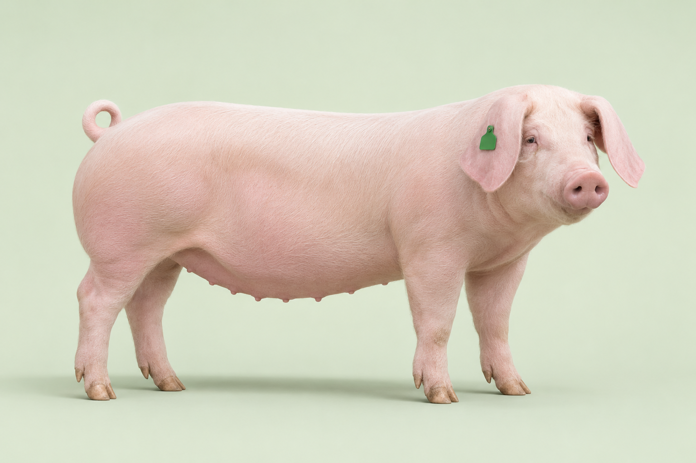

Farm owner → MAO
Farm details and reported animal-health concerns enter the municipal verification and field-monitoring workflow.
One digital identity for every pig. Connect farm owners, field teams and local authorities across Laguna in one shared record.
Choose your portal See how the roles connect
Landrace Cross · Fattener · 78 kg
Digital identity assigned by the farm owner
Technician report #INS-802
Local QR or OPV shipping permit
Ante- and post-mortem clearance
Each role contributes to the traceability record, from farm registration to meat inspection.
Follow how farm records, field observations and movement checks connect across the five roles.
Farm details and reported animal-health concerns enter the municipal verification and field-monitoring workflow.
MAO assigns field visits. Technicians return observations, follow-up details and referrals for review.
A local movement QR identifies the pig and destination. OPV separately reviews interprovincial shipping applications.
Municipal throughput, disease incidents and slaughter records support province-wide monitoring and analysis.
Start with the work you do.
Choose your portal